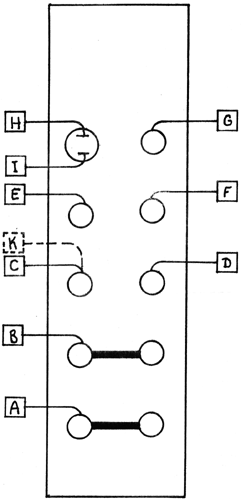

NOISE SOURCE The only delicate point about wiring this module is when a RANDOM VOLTAGE GENERATOR is used in the same system. The RVG obtains its randomness from the noise signals developed by this NOISE SOURCE. Therefore the RVG must be wired as shown by the dotted lines. Pad K is located on the RANDOM VOLTAGE GENERATOR printed circuit board. This connection must be repeated for every RANDOM VOLTAGE GENERATOR in the system. SELF TEST PROCEDURE Connect the Pink and White Noise outputs to a monitor system to audibly insure their operation. The S/H Source produces a randomly frequency modulated sawtooth waveform at about 400 hertz. The blue jack is a positive going wave and the black jack output goes both positive and negative. These outputs are useful in the production of equally probable random voltage levels when used with the SAMPLE AND HOLD module. The stepped random output jacks produce a new voltage level each time the push button 1s depressed or a trigger is applied to the red jack. The blue jack is for positive voltage levels and the black jacks should produce both positive and negative voltages.
|